Аполлонія / Статті / Тимчасові конструкції як запорука успішного естетичного протезування керамічними вінірами
Клінічний випадок · журнал «ДентАрт» 2024 №2
Тимчасові конструкції як запорука успішного естетичного протезування керамічними вінірами
Veneer Success Through Temporization
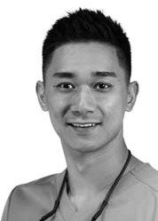
Едвард Лі
Edward Li · клініка «The a.b.c smile» (м. Лондон, Велика Британія)
Резюме
Створення якісних естетичних тимчасових конструкцій має велике значення для успішного встановлення керамічних вінірів. Це передбачає точне планування, створення дизайну усмішки і вибір матеріалу, незалежно від того, будуть це композитні чи керамічні вініри. У сучасній стоматології цифровий або аналоговий wax-up – обов'язкова складова процесу перетворення усмішки, адже він є візуальною опорною точкою як для пацієнта, так і для лікаря, і дозволяє пацієнтові побачити майбутню картину та надати зворотний зв'язок.
Ключові слова
тимчасові конструкції, керамічні вініри, «примірка усмішки», Honigum Pro Putty Soft Fast, Honigum Pro Light Fast, Luxatemp Star.
Abstract
The ability to efficiently create aesthetic temporaries is crucial for successful porcelain veneer procedures. This involves careful planning, smile design, and material selection, whether using composite resin or porcelain. Utilizing a digital or analogue wax-up is essential for modern smile transformations, providing a visual reference for both the patient and clinician and allowing for patient feedback and observations.
Key words
temporization, porcelain veneer, «trial smile», Honigum Pro Putty Soft Fast, Honigum Pro Light Fast, Luxatemp Star.
Тимчасові конструкції часто вважають лише орієнтовними направляючими для препарування зубів і тимчасовими реставраціями для пацієнта. Проте якщо виділити окремий візит для «примірки усмішки», пацієнт матиме більше впевненості й довіри до свого лікаря, і це у свою чергу полегшить їхній діалог про бажаний результат, що є вкрай важливим.
Такі косметичні процедури, як встановлення вінірів, передбачають певні зобов'язання та мають потенційні ризики. Усунення розриву між теоретичним плануванням і отриманням фізичних результатів дозволяє зменшити ризики і покращити порозуміння між пацієнтом і лікарем.
Для створення 2-етапних полівінілсилоксанових відбитків з метою оцінки усмішки я надаю перевагу Honigum Pro Putty Soft Fast (фіолетовий) і Honigum Pro Light Fast (помаранчевий) від DMG. 2-фазна техніка зняття відбитків гарантує точніші параметри, реалістичніші амбразури та контактні точки. Отже, кінцевий результат буде більш естетичним, а тривалість доопрацювання значно зменшиться. Робочого часу Honigum Pro з технологією snap-set з лінійки Fast цілком достатньо для відпрацьованого зняття й підрізання відбитків.
Luxatemp Star – відомий і надійний матеріал для створення тимчасових реставрацій, що забезпечує передбачуване твердіння за технологією snap-set, високу естетику та довговічність тимчасових конструкцій між візитами. Мій улюблений відтінок Luxatemp Star BL дуже схожий на BL3 і має трохи більшу прозорість, якщо порівняти з e.max MT. Завдяки цьому він дозволяє отримати цінний візуальний зворотний зв'язок під час «примірки усмішки» і встановлення тимчасових конструкцій задля отримання бажаного естетичного результату.
Клінічний випадок
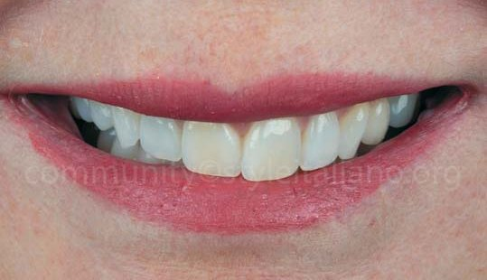
Пацієнтка прагнула виправити асиметричне розташування зубів, збільшити їх вестибулярний об'єм і заповнити куточки усмішки. На її думку, верхній ряд нерівний, і висота розташування зубів з правого боку більша, ніж з лівого. Ще однією вимогою було зробити зуби трохи яскравішими, але так, щоб вони не мали вигляду занадто штучних.
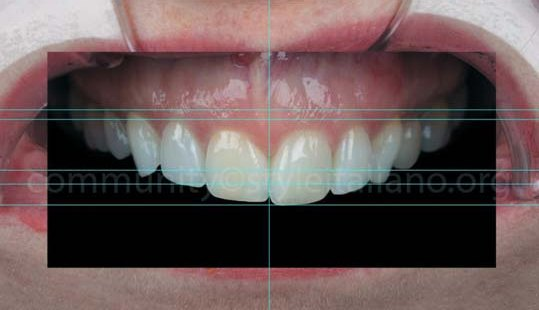
Використання деяких простих орієнтирних ліній допомагає зіставити горизонтальну лінію усмішки з рівнем очей пацієнтки. Різні лінії потрібні для зіставлення орієнтирів, таких як довжина різців і зеніти ясен. Це є першим етапом для отримання даних, щоб створити усмішку і зробити аналоговий wax-up.
В окремих випадках я надаю перевагу власноруч створеному аналоговому wax-up замість використання стандартних бібліотек у цифровому середовищі. Це додатковий wax-up, що не потребує видалення зубних тканин і допомагає з'ясувати, чи можливо заповнити щічні коридори без створення надмірного об'єму. Зверніть увагу на напівпрозорі ділянки у воску, де просвічуються свої зуби. Так я одразу бачу, де глибина препарування матиме вирішальне значення, особливо якщо потрібно замаскувати підлеглі тканини. Такі деталі губляться на екрані монітора, тобто під час створення цифрового wax-up, і з цим можна впоратися, але все ще не на інтуїтивному рівні.
2-фазний полівінілсилоксановий ключ від DMG Honigum Pro Putty Soft Fast (фіолетовий) і Honigum Pro Light Fast (помаранчевий) з відвідними канальцями для витоку зайвого матеріалу. Зверніть увагу на виріз у центрі – він допомагає легко зорієнтувати ключ по середній лінії під час перенесення його всередині ротової порожнини. У разі примірки індексу палатинальна частина mock-up має покривати лише ріжучу третину зубів, щоб решту можна було легко видалити, полегшити відведення зайвого об'єму і щоб менше матеріалу лишалося між зубами (особливо коли є зафіксовані ретейнери). Щоб зберегти вертикальні орієнтири позиціювання індексу, лишіть його певну частину оклюзійної поверхні на молярах і премолярах. Нанесено Luxatemp Star BL, і одним блоком видалено зайву кількість, коли матеріал перебував у гелеподібній фазі. Упродовж процесу видалення на ключ потрібно чинити тиск пальцем.
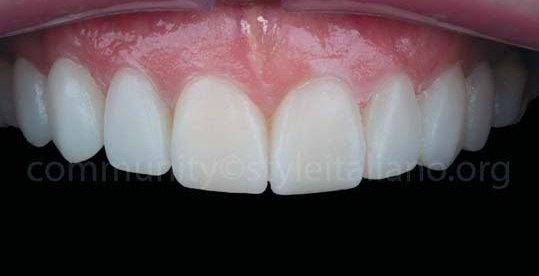
Прецизійний ключ, чітка посадка та безперешкодний процес твердіння дозволяють Luxatemp Star (DMG) проявити свій потенціал. Бори й полірування на цьому етапі не використовуються, лише зайві пластинки матеріалу видаляються серповидним скейлером. Пацієнт може вперше отримати уявлення, якою може бути його усмішка, та зрозуміти бачення стоматолога.
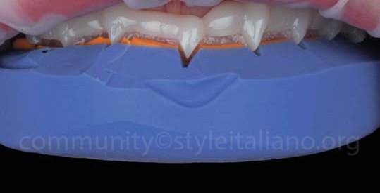
Зовнішній вигляд нової усмішки дозволяє лікареві проаналізувати картину і врахувати думку пацієнта. Первинний аналіз показав, що зуби з правого боку можна ще подовжити, щоб краще сховати кривизну верхньої дуги, зберігаючи водночас контроль над функціональністю форми та латеральною направляючою на тому боці.
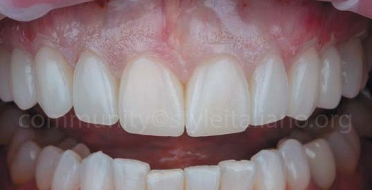
У день препарування ми використовуємо той самий ключ для нанесення Luxatemp Star на зуби для створення орієнтуючого mock-up.
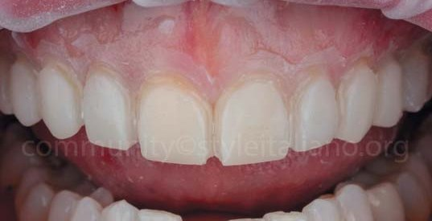
Кулястий алмазний бор діаметром від 0,8 до 1 мм – ефективний засіб окреслення відповідних меж. Перше препарування вглиб дозволяє вносити зміни на кінцевому матеріалі, наприклад, дисилікаті літію. Бором потрібно водночас обробляти два зуби, зосереджуючи увагу на контактних пунктах і розділяючи навпіл ширину бора між ними.
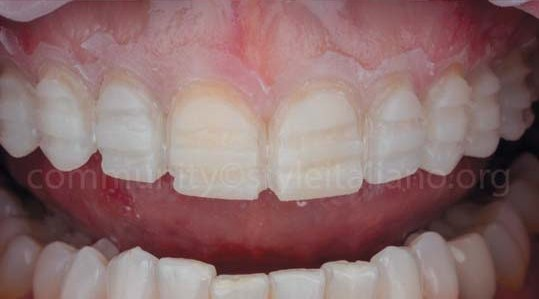
Створюємо додаткові канавки, котрі мають бути глибшими в зоні різців, якщо, окрім мінімальної товщини, потрібно вмістити більше шарів кераміки та додати внутрішні ефекти.
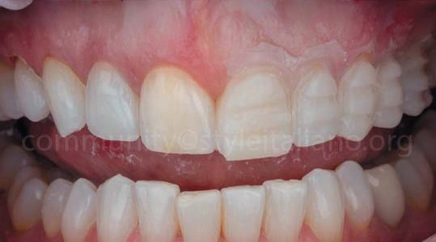
Маючи на меті розширення зубної арки зі створенням більш симетричного щічного контуру, ми, видаливши залишки mock-up з правого боку, побачили майже інтактну поверхню зубів.
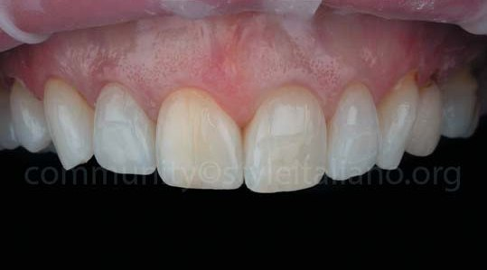
Це помітно також і на лівому боці.Ретракційна нитка 00 введена в зоні зубів 15–25 одним нерозділеним фрагментом, щоб покращити деталізацію приясенної зони 2-фазного відбитка з полівінілсилоксану. Після цього дизайн препарування зубів вдосконалюється задля більш точної посадки і створення оптимального шляху введення реставрацій. У цьому випадку нам не потрібно виходити в інтерпроксимальні зони зубів, щоб закрити чорні трикутники, тому всі контактні пункти залишаються інтактними, а всі відпрепаровані поверхні лишаються з емаллю для кращого адгезивного з'єднання.
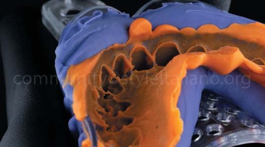
2-фазний полівінілсилоксановий відбиток, зроблений з Honigum Pro Putty Soft Fast (фіолетовий) і Honigum Pro Light Fast (помаранчевий) (DMG). Найкращою демонстрацією деталізації та міцності на розрив є інтерпроксимальні арки силікону навколо контактних пунктів.
Створюємо тимчасові конструкції і робимо первинний аналіз достатності препарування зубів, керуючись товщиною та інтенсивністю кольору пластмаси. Точкове протравлювання емалі робиться, щоб усі тимчасові вініри були адгезивно зафіксовані як одна одиниця, причому вони мають виглядати, як окремі, а процес очищення міжзубними щітками має відбуватися легко. Цементи для тимчасової фіксації не використовуються. Натомість основою ретенції є мікромеханічне з'єднання з елементами макромеханічної ретенції на ріжучих краях, що повинно витримувати навантаження від кусання. Для цього використовується Luxatemp Star BL.
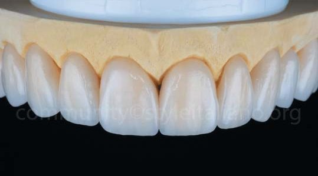
Постійні вініри зроблені з дисилікату літію відтінку BL3 та прозорості МТ, причому на ріжучу третину нанесено додаткові керамічні шари. Реставрація була переважно монолітною через необхідну невелику товщину і намір візуально інтегрувати властивості природного зуба за допомогою вінірів, щоб виділити його природні відтінки без будь-якого маскування.
Для цементування знадобився композитний цемент для вінірів Vitique BL (DMG). Його нанесли за допомогою ергономічного широкого носика, з яким легше наносити матеріал без обов'язкового використання мікробрашів і з мінімальним ризиком контамінації та створення повітряних бульбашок. Перед адгезивною фіксацією керамічні поверхні були оброблені піскоструменем, протравлені й силанізовані. Потім на зуби нанесли універсальний адгезивний засіб Ecosite Bond (DMG) і дали йому подіяти.
Протравлювання і нанесення адгезиву робили одночасно на всіх зубах після ретельного очищення контактних пунктів. Адгезив не засвічували, щоб легше було встановити вініри. Усі вініри встановлювали одночасно, від середньої лінії – в обидва боки, щоб точно контролювати їхнє розміщення.
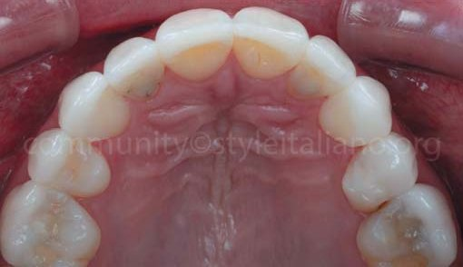
Вигляд з оклюзійного боку перед лікуванням. Помітно невеликі ротації окремих зубів, звужену дугу – через видалені перші премоляри та зуб UL5 (25), повернутий на 180°, зі встановленим вініром.
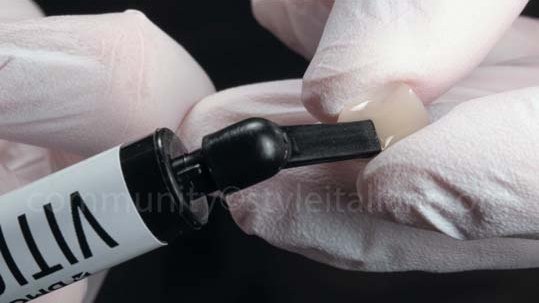
Вигляд оклюзії після лікування. Помітна фінішна лінія та гармонія. Після збільшення «щічного коридору» силует зубної дуги та форма окремих зубів мають інакший вигляд.
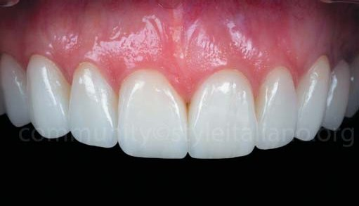
Фронтальне фото зі встановленими ретракторами та контрастером. Вініри з дисилікату літію відтінку BL3 MT з мінімальною товщиною та певним нашаруванням на ріжучих третинах, де було місце.
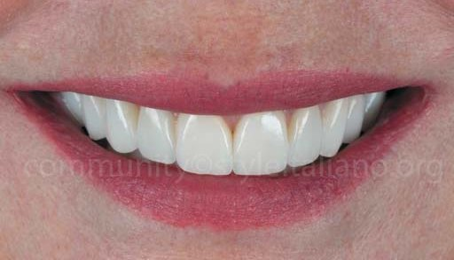
Якісне заповнення «щічних коридорів» і маскування вигину зубної дуги на верхніх щелепах. Якісно сформована і гармонійна усмішка, створена з використанням даних, отриманих під час «примірки усмішки» з використанням Luxatemp Star.
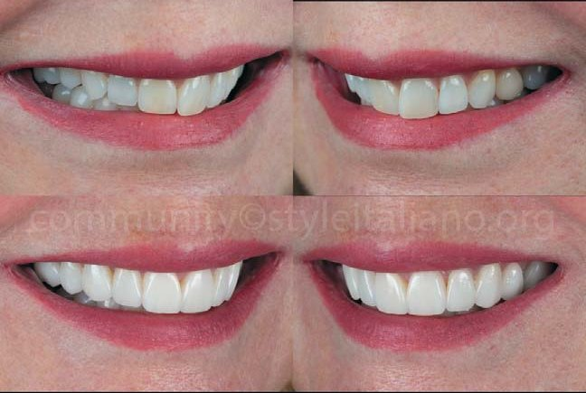
Більше світлин, що демонструють вигляд ширших зубних дуг без ретракції губ. Після збільшення об'єму зі щічного боку за допомогою вінірів верхня дуга більше не має V-подібної форми.
Висновки
Якщо на початку процесу лікування робиться «примірка усмішки», подальші етапи проходять приємніше як для пацієнта, так і для лікаря, адже вони добре розуміють одне одного і мають спільну мету.
«Примірка усмішки» задля отримання прогнозованого результату, виготовлення високоестетичних тимчасових конструкцій з Luxatemp Star (DMG), точна передача кольору та міцність матеріалу є запорукою тривалої довіри пацієнта до лікаря на шляху до отримання успішного результату. І весь процес ґрунтується на моєму виборі силікону, а саме матеріали лінійки Honigum Pro від DMG виконують усю важку роботу та гарантують ефективність замішування, прогнозований робочий час і характеристики ідеальних готових відбитків, ключів і примірювальних форм з першого разу.
За матеріали, опубліковані у вигляді цієї статті, відповідає автор, адже вони є його власними думками та досвідом. StyleItaliano не несе відповідальності за візуальні та письмові матеріали цієї роботи.
Література
Chalifoux P. R., Darvish M. Porcelain veneers: concept, preparation, temporization, laboratory, and placement. Practical Periodontics and Aesthetic Dentistry: PPAD. 1993 May 1;5(4):11-7.
Hammond B. D., Machowski M., Londono J., Pannu D. Fabrication of Porcelain Veneer Provisional Restorations: A Critical Review. Dentistry Review. 2022 Jun 1;2(2):100004.
![В окремих випадках я надаю перевагу власноруч створеному аналоговому wax-up замість використання стандартних бібліотек у цифровому середовищі. Це додатковий wax-up, що не потребує видалення зубних тканин і допомагає з'ясувати, чи можливо заповнити щічні коридори без створення надмірного об'єму. Зверніть увагу на напівпрозорі ділянки у воску, де просвічуються свої зуби. Так я одразу бачу, де глибина препарування матиме вирішальне значення, особливо якщо потрібно замаскувати підлеглі тканини. Такі деталі губляться на екрані монітора, тобто під час створення цифрового wax-up, і з цим можна впоратися, але все ще не на інтуїтивному рівні.](images/li24-003.jpg)
![2-фазний полівінілсилоксановий ключ від DMG Honigum Pro Putty Soft Fast (фіолетовий) і Honigum Pro Light Fast (помаранчевий) з відвідними канальцями для витоку зайвого матеріалу. Зверніть увагу на виріз у центрі – він допомагає легко зорієнтувати ключ по середній лінії під час перенесення його всередині ротової порожнини. У разі примірки індексу палатинальна частина mock-up має покривати лише ріжучу третину зубів, щоб решту можна було легко видалити, полегшити відведення зайвого об'єму і щоб менше матеріалу лишалося між зубами (особливо коли є зафіксовані ретейнери). Щоб зберегти вертикальні орієнтири позиціювання індексу, лишіть його певну частину оклюзійної поверхні на молярах і премолярах. Нанесено Luxatemp Star BL, і одним блоком видалено зайву кількість, коли матеріал перебував у гелеподібній фазі. Упродовж процесу видалення на ключ потрібно чинити тиск пальцем.](images/li24-004.jpg)
![Ретракційна нитка 00 введена в зоні зубів 15–25 одним нерозділеним фрагментом, щоб покращити деталізацію приясенної зони 2-фазного відбитка з полівінілсилоксану. Після цього дизайн препарування зубів вдосконалюється задля більш точної посадки і створення оптимального шляху введення реставрацій. У цьому випадку нам не потрібно виходити в інтерпроксимальні зони зубів, щоб закрити чорні трикутники, тому всі контактні пункти залишаються інтактними, а всі відпрепаровані поверхні лишаються з емаллю для кращого адгезивного з'єднання.](images/li24-012.jpg)
![Створюємо тимчасові конструкції і робимо первинний аналіз достатності препарування зубів, керуючись товщиною та інтенсивністю кольору пластмаси. Точкове протравлювання емалі робиться, щоб усі тимчасові вініри були адгезивно зафіксовані як одна одиниця, причому вони мають виглядати, як окремі, а процес очищення міжзубними щітками має відбуватися легко. Цементи для тимчасової фіксації не використовуються. Натомість основою ретенції є мікромеханічне з'єднання з елементами макромеханічної ретенції на ріжучих краях, що повинно витримувати навантаження від кусання. Для цього використовується Luxatemp Star BL.](images/li24-014.jpg)